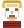

Kurt Cobain
February 20, 1967 — April 5, 1994



Kurt, 1992 — and our pixel portrait
Childhood
Kurt Donald Cobain was born in Aberdeen, Washington. His parents divorced when he was nine, and he spent the years after that moving between relatives, often feeling pushed away. He described his childhood as lonely and hard.
Music was the way out. He loved The Beatles and then punk — the Sex Pistols, The Clash — and by his early teens he was playing guitar and writing songs. He said later that he always wanted to be a rock star.
Nirvana
In 1987 he formed Nirvana with bassist Krist Novoselic. The band climbed from dirty clubs to Nevermind, the album that made them the biggest group of their generation. Kurt wrote nearly all the songs, sang, and played guitar.
Fame hit him hard. For years he had suffered stomach pain that doctors could not diagnose, and he turned to painkillers to dull it. On top of that came depression and a heroin addiction. He was open about all of it in interviews, sometimes painfully so.
Family
In February 1992 Kurt married Courtney Love, the singer of the band Hole. Their daughter Frances Bean Cobain was born on August 18, 1992. She was not yet two years old when her father died.
Frances was raised mostly by relatives and became a visual artist. She has said that she knows her father mainly through his music and other people's memories of him.
What he sounded like
Kurt's writing was plain and blunt, the way a person sounds when they have stopped trying to impress anybody. Quiet verses, then a scream. He screamed because he meant it. That's why it still works.
His other art
Kurt was a visual artist before he was a rock star. He drew and painted constantly — notebooks full of sketches, collages, cartoon creatures. He designed the cover of In Utero himself, and painted on his own guitars. The drawings in his Journals are half of what makes that book worth keeping.
Last updated: 03/30/94
[ home ] · Nirvana Memorial Web Ring


© 1994 · in memory of Kurt Cobain